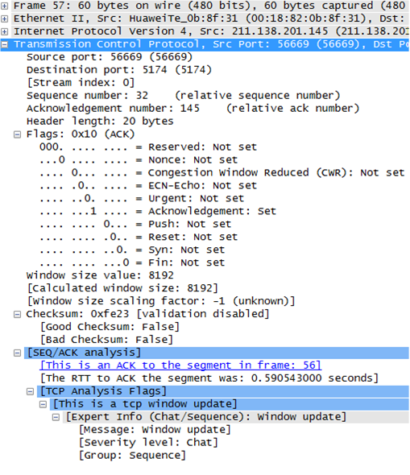
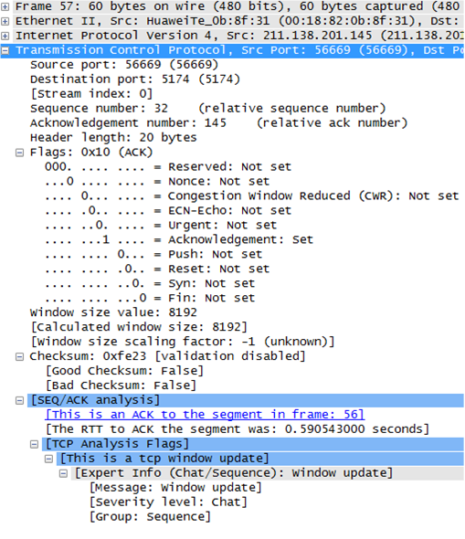

报文格式
图1 TCP首部格式

| 字段 | 长度 | 含义 |
|---|---|---|
| Source Port | 16比特 | 源端口，标识哪个应用程序发送。 |
| Destination Port | 16比特 | 目的端口，标识哪个应用程序接收。 |
| Sequence Number | 32比特 | 序号字段。TCP链接中传输的数据流中每个字节都编上一个序号。序号字段的值指的是本报文段所发送的数据的第一个字节的序号。 |
| Acknowledgment Number | 32比特 | 确认号，是期望收到对方的下一个报文段的数据的第1个字节的序号，即上次已成功接收到的数据字节序号加1。只有ACK标识为1，此字段有效。 |
| Data Offset | 4比特 | 数据偏移，即首部长度，指出TCP报文段的数据起始处距离TCP报文段的起始处有多远，以32比特（4字节）为计算单位。最多有60字节的首部，若无选项字段，正常为20字节。 |
| Reserved | 6比特 | 保留，必须填0。 |
| URG | 1比特 | 紧急指针有效标识。它告诉系统此报文段中有紧急数据，应尽快传送（相当于高优先级的数据）。 |
| ACK | 1比特 | 确认序号有效标识。只有当ACK=1时确认号字段才有效。当ACK=0时，确认号无效。 |
| PSH | 1比特 | 标识接收方应该尽快将这个报文段交给应用层。接收到PSH = 1的TCP报文段，应尽快的交付接收应用进程，而不再等待整个缓存都填满了后再向上交付。 |
| RST | 1比特 | 重建连接标识。当RST=1时，表明TCP连接中出现严重错误（如由于主机崩溃或其他原因），必须释放连接，然后再重新建立连接。 |
| SYN | 1比特 | 同步序号标识，用来发起一个连接。SYN=1表示这是一个连接请求或连接接受请求。 |
| FIN | 1比特 | 发端完成发送任务标识。用来释放一个连接。FIN=1表明此报文段的发送端的数据已经发送完毕，并要求释放连接。 |
| Window | 16比特 | 窗口：TCP的流量控制，窗口起始于确认序号字段指明的值，这个值是接收端正期望接收的字节数。窗口最大为65535字节。 |
| Checksum | 16比特 | 校验字段，包括TCP首部和TCP数据，是一个强制性的字段，一定是由发端计算和存储，并由收端进行验证。在计算检验和时，要在TCP报文段的前面加上12字节的伪首部。 |
| Urgent Pointer | 16比特 | 紧急指针，只有当URG标志置1时紧急指针才有效。TCP的紧急方式是发送端向另一端发送紧急数据的一种方式。紧急指针指出在本报文段中紧急数据共有多少个字节（紧急数据放在本报文段数据的最前面）。 |
| Options | 可变 | 选项字段。TCP协议最初只规定了一种选项，即最长报文段长度（数据字段加上TCP首部），又称为MSS。MSS告诉对方TCP“我的缓存所能接收的报文段的数据字段的最大长度是MSS个字节”。 新的RFC规定有以下几种选型：选项表结束，无操作，最大报文段长度，窗口扩大因子，时间戳。
|
| Padding | 可变 | 填充字段，用来补位，使整个首部长度是4字节的整数倍。 |
| data | 可变 | TCP负载。 |
报文示例
图2 TCP报文(正常报文)
图3 TCP报文（Keepalive）
图4 TCP报文（Keepalive ACK）
图5 TCP报文（Duplicate ACK）
图6 TCP报文（重传）
图7 TCP报文（Out-Of-Order乱序）
图8 TCP报文（Window Update）


参考标准
| 标准 | 描述 |
|---|---|
| RFC 793 | Transmission Control Protocol |